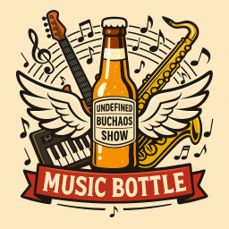

Регламент проведения конкурса Music Bottle
на фестивале Undefined-2026
Дата проведения: 21 февраля 2026 г.
Начало: 19:30
Место проведения: СПб, пос. Рощино, зал загородного отеля "Райвола".
Формат сессии
Зимний конкурс 2026 года проходит под эгидой "мы любим клавиши". Девиз этого фестиваля - "Битва синтезаторов".
Официальный логотип состязания
(Вслед за блокировками Telegram и kernel.org, отключилась передача картинок с user content на GitHub.com. Если картинки нет - вы знаете кого винить. Поверьте, логотип у нас есть, и он прекрасен).

Краткое описание
Требования к участникам
Участники должны уметь играть и импровизировать на своих инструментах. Во время выступления инструмент должен использоваться в режиме живого исполнения: допускается автоматизация и минус, но полная фанера и кривляния под нее - запрещены.
Требования к инструментам
В зимней сессии 2026 года участники должны использовать в своем выступлении клавишный инструмент: синтезатор / MIDI-клавиатуру / самодельное клавишное устройство. Если это электронный инструмент, он не должен использоваться только как проигрыватель. Допустимо использовать дополнительные музыкальные инструменты.
Требования к стилю
Ограничений на стили нет. Можно играть в любом стиле: рок, поп, блюз, джаз, этника, электронщина - все что угодно.
Конкурсные раунды
Конкурс состоит из 4 раундов:
1. Раунд "Всегда готов!". Самый простой раунд. У каждого музыканта или музыкального коллектива всегда есть дежурная мелодия/песня, которую он исполняет.
2. Раунд "Музыкальный марафон". Ведущий озвучивает известную песню, участники договориваются о тональности и темпе. Первый участник играет на своем оборудовании первый куплет песни и припев, если он есть. Второй участник "в склейку" подхватывает и играет второй куплет+припев на своем оборудовании. Завершающий куплет+припев песни участники играют вместе. Далее озвучивается вторая песня, очередность вступления участников меняется местами. Если участнику сложно одновременно играть и петь, он может воспользоваться помощью из зала.
3. Раунд "По клавишам вслепую". Играющему участнику завязывают глаза. Первый игрок заказывает мелодию/песню, второй, с завязанными глазами исполняет. Далее участники меняются.
4. Раунд примирения. Раунд проходит в формате джем-сейшена. Участники играют на инструментах вместе и импровизируют. В начале каждой композиции озвучивается тональность. Количество и длительность мелодий/песен не ограничено.
Непредсказуемый фактор
Ведущий, по своему желанию, может использовать на сцене свой собственный музыкальный инструмент (не обязательно клавишный). Для добавления фактора внезапности и драйва, ведущий может во время исполнения любой композиции и песни добавить свою музыкальную линию на своем инструменте в звучащую музыку. Исполнитель должен быть готов в любой момент слушать не только себя "в соло", но уметь быстро перестроиться под совместное исполнение.
Выставление оценок
Оценки выставляются жюри в составе не менее трех человек. В конце очередного раунда каждый член жюри отдает свой голос за понравившегося участника. В конце конкурса подсчитывается общее количество голосов за каждого участника. Голосование закрытое, результаты выясняются в конце всех раундов. В случае равного количества голосов, победитель определяется зрителями по громкости создаваемого ими шума.
Призы
В качестве приза разыгрывается бутылка с загадочной жидкостью (непосредственно, Music Bottle), которая во время конкурса находится на сцене и заряжается музыкальной энергетикой. Наличие других призов не запрещено.